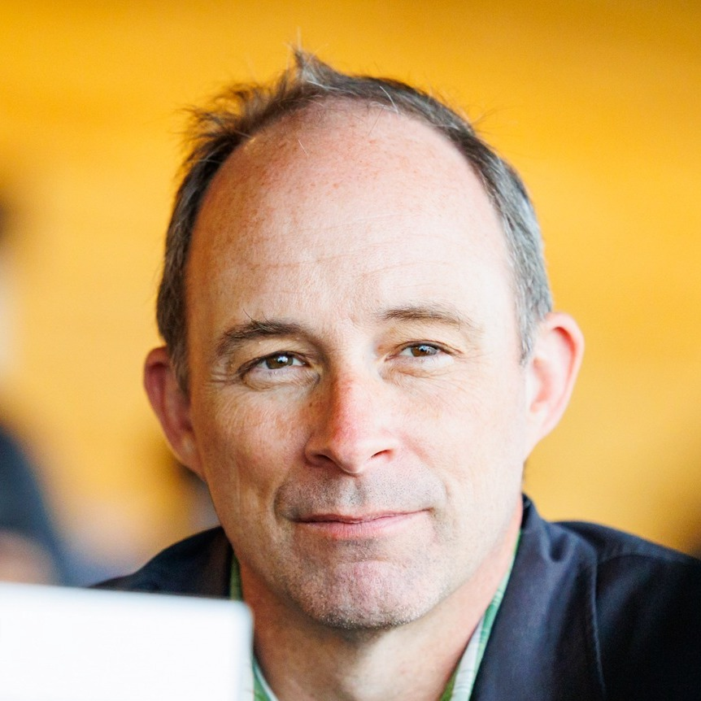

Brad Chamberlain
Brad is a founding member of the Chapel programming language project and has served as the project’s technical lead since 2006. He is a Distinguished Technologist at HPE (formerly Cray Inc.) who has spent his career focused on improving the productivity of supercomputer users, particularly through the design of programming languages. Brad earned his Ph.D. in Computer Science and Engineering from the University of Washington, with which he remains associated as an Affiliate Professor of the Paul G. Allen School. At the time of this writing, he is the de facto editor-in-chief of the Chapel blog.
Aside from scalable parallel computing, Brad is a big fan of board games (particularly medium-heavy Euros), music, and the arts.
Articles by Brad Chamberlain
-
7 Questions for CHAMPS Developers: Empowering Academic R&D to Create Cutting-Edge CFD Apps in Chapel
Posted on March 26, 2026
An interview with graduate students at Polytechnique Montréal about their experiences doing Computational Fluid Dynamics in Chapel
-
7 Questions for Akihiro Hayashi:
Early Chapel GPU Support through Multiresolution AbstractionsPosted on March 18, 2026
An interview with Dr. Akihiro Hayashi about his trailblazing work targeting GPUs with Chapel
-
Announcing Chapel 2.8!
Posted on March 12, 2026
Highlights from the March 2026 release of Chapel 2.8
-
7 Questions for Oliver Alvarado Rodriguez:
Exploiting Chapel’s Distributed Arrays for Graph Analysis through ArachnePosted on January 21, 2026
An interview with Dr. Oliver Alvarado Rodriguez about his use of Chapel in writing graph analytics computations
-
Announcing Chapel 2.7!
Posted on December 18, 2025
Highlights from the December 2025 release of Chapel 2.7
-
10 Myths About Scalable Parallel Programming Languages (Redux)
Part 8: Striving Toward AdoptabilityPosted on November 12, 2025
The eighth and final archival post from the 2012 IEEE TCSC blog series, with a current reflection on it
-
10 Myths About Scalable Parallel Programming Languages (Redux)
Part 7: Minimalist Language DesignsPosted on October 15, 2025
The seventh archival post from the 2012 IEEE TCSC blog series, with a current reflection on it
-
Announcing Chapel 2.6!
Posted on September 18, 2025
Highlights from the September 2025 release of Chapel 2.6
-
10 Myths About Scalable Parallel Programming Languages (Redux)
Part 6: Performance of Higher-Level LanguagesPosted on September 17, 2025
The sixth archival post from the 2012 IEEE TCSC blog series, with a current reflection on it
-
7 Questions for Marjan Asgari:
Optimizing Hydrological Models with ChapelPosted on September 15, 2025
An interview with Dr. Marjan Asgari about her use of Chapel for hydrological research
-
10 Myths About Scalable Parallel Programming Languages (Redux)
Part 5: Productivity and Magic CompilersPosted on August 20, 2025
The fifth archival post from the 2012 IEEE TCSC blog series, with a current reflection on it
-
7 Questions for Tiago Carneiro and Guillaume Helbecque:
Combinatorial Optimization in ChapelPosted on July 30, 2025
An interview with the two principal developers of ChOp, the Chapel-based Optimization Project
-
10 Myths About Scalable Parallel Programming Languages (Redux)
Part 4: Syntax MattersPosted on July 23, 2025
The fourth archival post from the 2012 IEEE TCSC blog series, with a current reflection on it
-
10 Myths About Scalable Parallel Programming Languages (Redux)
Part 3: New Languages vs. Language ExtensionsPosted on June 25, 2025
A third archival post from the 2012 IEEE TCSC blog series, with a current reflection on it
-
Announcing Chapel 2.5!
Posted on June 12, 2025
Highlights from the June 2025 release of Chapel 2.5
-
10 Myths About Scalable Parallel Programming Languages (Redux)
Part 2: Past Failures and Future AttemptsPosted on May 28, 2025
Another archival post from the IEEE TCSC blog in 2012, with a current reflection on it
-
10 Myths About Scalable Parallel Programming Languages (Redux)
Part 1: Productivity and PerformancePosted on April 30, 2025
An archival post from the IEEE TCSC blog in 2012, with a current reflection on it
-
Announcing Chapel 2.4!
Posted on March 20, 2025
Highlights from the March 2025 release of Chapel 2.4
-
7 Questions for Bill Reus:
Interactive Supercomputing with Chapel for CybersecurityPosted on February 12, 2025
An interview with Bill Reus about the creation of Arkouda, a Python library supporting interactive data analysis on HPC systems
-
Announcing Chapel 2.3!
Posted on December 12, 2024
Highlights from the December 2024 release of Chapel 2.3
-
7 Questions for David Bader:
Graph Analytics at Scale with Arkouda and ChapelPosted on November 6, 2024
An interview with Computer Science Professor David Bader about his use of Arkouda for graph analytics
-
7 Questions for Nelson Luís Dias:
Atmospheric Turbulence in ChapelPosted on October 15, 2024
An interview with Professor of Environmental Engineering Nelson Luís Dias about his use of Chapel in analyzing Atmospheric Turbulence
-
7 Questions for Scott Bachman:
Analyzing Coral Reefs with ChapelPosted on October 1, 2024
An interview with oceanographer Scott Bachman, focusing on his work to measure coral reef biodiversity using satellite image analysis
-
Announcing Chapel 2.2!
Posted on September 26, 2024
A summary of highlights from the September 2024 release of Chapel 2.2
-
7 Questions for Éric Laurendeau:
Computing Aircraft Aerodynamics in ChapelPosted on September 17, 2024
An interview with CHAMPS PI and Professor of Mechanical Engineering, Éric Laurendeau
-
What’s New with Chapel?
Nine Questions for the Development Team
External ArticlePosted on September 4, 2024
An interview published by HPCWire with Brad Chamberlain
-
Announcing Chapel 2.1!
Posted on June 27, 2024
A summary of highlights from the June 2024 release of Chapel 2.1
-
Doing science in Python? Wishing for more speed or scalability?
Posted on April 30, 2024
A call for computational science collaborations around Chapel and Python
-
Announcing Chapel 1.33!
Posted on December 14, 2023
A summary of highlights from the December 2023 release of Chapel 1.33.0
-
Programming with Chapel: Making the Power of Parallelism
and Supercomputers More Accessible
External ArticlePosted on November 10, 2023
An interview published by the devm.io blog with Brad Chamberlain
-
Announcing Chapel 1.32!
Posted on September 28, 2023
A summary of highlights from the September 2023 release of Chapel 1.32.0
-
Announcing Chapel 1.31!
Posted on June 22, 2023
A summary of highlights from the June 2023 release of Chapel 1.31.0
-
Announcing Chapel 1.30.0!
Posted on March 23, 2023
A summary of highlights from the March 2023 release of Chapel 1.30.0
-
Advent of Code 2022: Wrap-up
Posted on December 20, 2022
A summary of our twelve days of AoC 2022 and a peek at some of Chapel’s distributed programming features
-
Advent of Code 2022, Day 11: Monkeying Around
Posted on December 17, 2022
A parallel solution to day eleven of AoC 2022, using Chapel’s task parallel features.
-
Announcing Chapel 1.29.0!
Posted on December 15, 2022
A summary of highlights from the December 2022 release of Chapel 1.29.0
-
Advent of Code 2022, Day 8: Hiding Treehouses
Posted on December 8, 2022
A solution to day eight of AoC 2022, introducing domains and multidimensional arrays.
-
Advent of Code 2022, Day 6: Packet Detection
Posted on December 6, 2022
A parallel solution to day six of AoC 2022, introducing configs, parallel loop expressions, range translation, and named, unbounded, and counted ranges.
-
Advent of Code 2022, Day 5: Stacking Crates
Posted on December 5, 2022
A solution to day five of AoC 2022 featuring arrays, lists, strided ranges, zippered iteration, unbounded ranges, and references.
-
Advent of Code 2022, Day 3: Rucksack Comparisons
Posted on December 3, 2022
A parallel solution to day three of AoC 2022, introducing ranges,
bytes, forall-loops, and sets -
Advent of Code 2022, Day 2: Rochambeau
Posted on December 2, 2022
A parallel solution to day two of AoC 2022, introducing enums, procedures, iterators, arrays, and promotion
-
Advent of Code 2022, Day 1: Counting Calories
Posted on December 1, 2022
A simple solution to day one of AoC 2022, introducing basic Chapel concepts
-
Advent of Code 2022: Twelve Days of Chapel
Posted on November 30, 2022
The Chapel team’s plan for blogging during Advent of Code 2022.
-
Welcome to the Chapel blog!
Posted on November 30, 2022
An introduction to the Chapel blog, and our intentions and plans for it.